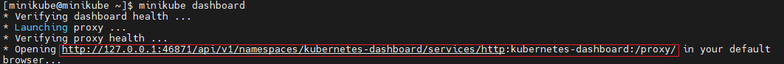
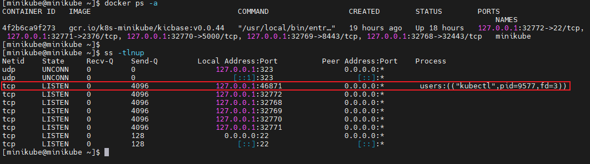
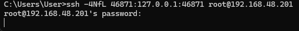
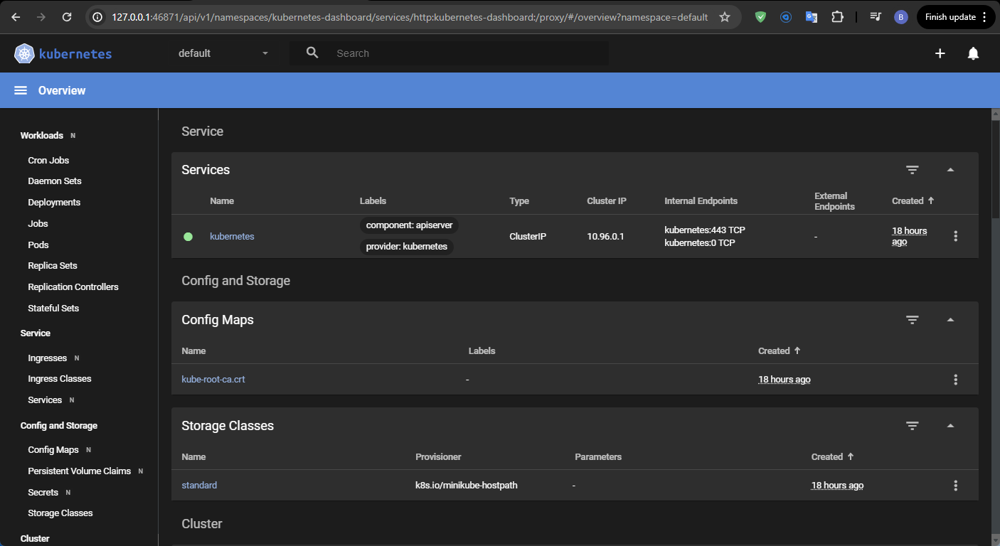

minikube 是一個可以在 local 端快速鍵立 Kubernetes cluster(k8s) 的模擬環境, 支援 macOS, Linux, Windows, 讓 user 可以快速在 k8s 上進行學習和開發.
Pre-require
官方有給出最小所需資源
- 雙核心 (CPUs or more)
- 記憶體 2 GB (2 GB of free memory)
- 硬碟空間 20 GB (20GB of free disk space)
- 外部網路 (Internet connection)
官方有列出各類型 OS 建議搭建在何種虛擬環境上
Linux 目前還是推薦使用 Docker 和 KVM2, 這一篇使用的 OS 和 Driver 是 Centos 9 和 Docekr.
Install
因為版本選用的是 Linux, x86-64, Stable, RPM package
Minikube start
Download + Install rpm
1
2
|
curl -LO https://storage.googleapis.com/minikube/releases/latest/minikube-latest.x86_64.rpm
sudo rpm -Uvh minikube-latest.x86_64.rpm
|
Start Minikube 1st
這時候會出現失敗是因為還沒有安裝任何 minikube 所需要的虛擬話環境.
1
2
3
4
5
6
7
8
9
10
|
* minikube v1.33.1 on Centos 9
* Unable to pick a default driver. Here is what was considered, in preference order:
* Alternatively you could install one of these drivers:
- docker: Not installed: exec: "docker": executable file not found in $PATH
- kvm2: Not installed: exec: "virsh": executable file not found in $PATH
- podman: Not installed: exec: "podman": executable file not found in $PATH
- qemu2: Not installed: exec: "qemu-system-x86_64": executable file not found in $PATH
- virtualbox: Not installed: unable to find VBoxManage in $PATH
X Exiting due to DRV_NOT_DETECTED: No possible driver was detected. Try specifying --driver, or see https://minikube.sigs.k8s.io/docs/start/
|
Install Docker
Ref：Install Docker Engine on CentOS
Remove old docker version
1
|
sudo yum remove docker docker-client docker-client-latest docker-common docker-latest docker-latest-logrotate docker-logrotate docker-engine
|
Set up the repository
1
2
|
sudo yum install -y yum-utils
sudo yum-config-manager --add-repo https://download.docker.com/linux/centos/docker-ce.repo
|
Install Docker Engine
1
|
sudo yum install -y docker-ce docker-ce-cli containerd.io docker-buildx-plugin docker-compose-plugin
|
Check Docker Engine version
1
2
|
docker --version
Docker version 26.1.4, build 5650f9b
|
Start/Enable Docker
1
|
systemctl enable docker.service --now
|
Start Minikube 2nd
1
2
3
4
5
6
7
|
* minikube v1.33.1 on Centos 9
* Automatically selected the docker driver. Other choices: ssh, none
* The "docker" driver should not be used with root privileges. If you wish to continue as root, use --force.
* If you are running minikube within a VM, consider using --driver=none:
* https://minikube.sigs.k8s.io/docs/reference/drivers/none/
X Exiting due to DRV_AS_ROOT: The "docker" driver should not be used with root privileges.
|
正常來說 minikube 不希望以 root 的身份來執行 minikube, 因為每一個 container 都有各自的 daemond 因此就有可能因為 root 權限影響到 OS 的風險.
而在正常情況下, Kubernetes 也不會使用 root 來操作, 會偏向一般的使用者.
The “docker” driver should not be used with root privileges.
Docker daemon attack surface
Manage Docker as a non-root user
[Docker] 在容器中取得特權存取權限
Create user
1
2
3
4
5
6
7
8
9
10
11
|
# create user
useradd minikube
# change password(optional)
passwd minikube
# add to docker group
usermod -aG docker minikube
## check
id minikube
uid=1000(minikube) gid=1000(minikube) groups=1000(minikube),982(docker)
|
Start Minikube 3rd
直接切換使用者或使用新使用者登入
1
2
|
su - minikube
minikube start
|
1
2
3
4
5
6
7
8
9
10
11
12
13
14
15
16
17
18
19
|
* minikube v1.33.1 on Centos 9
* Automatically selected the docker driver
* Using Docker driver with root privileges
* Starting "minikube" primary control-plane node in "minikube" cluster
* Pulling base image v0.0.44 ...
* Downloading Kubernetes v1.30.0 preload ...
> preloaded-images-k8s-v18-v1...: 342.90 MiB / 342.90 MiB 100.00% 8.12 Mi
> gcr.io/k8s-minikube/kicbase...: 481.58 MiB / 481.58 MiB 100.00% 7.74 Mi
* Creating docker container (CPUs=2, Memory=2200MB) ...
* Preparing Kubernetes v1.30.0 on Docker 26.1.1 ...
- Generating certificates and keys ...
- Booting up control plane ...
- Configuring RBAC rules ...
* Configuring bridge CNI (Container Networking Interface) ...
* Verifying Kubernetes components...
- Using image gcr.io/k8s-minikube/storage-provisioner:v5
* Enabled addons: default-storageclass, storage-provisioner
* kubectl not found. If you need it, try: 'minikube kubectl -- get pods -A'
* Done! kubectl is now configured to use "minikube" cluster and "default" namespace by default
|
查看 container 運作狀態
1
2
3
|
docker ps
CONTAINER ID IMAGE COMMAND CREATED STATUS PORTS NAMES
c3b1a6d422ae gcr.io/k8s-minikube/kicbase:v0.0.44 "/usr/local/bin/entr…" 4 minutes ago Up 4 minutes 127.0.0.1:32772->22/tcp, 127.0.0.1:32771->2376/tcp, 127.0.0.1:32770->5000/tcp, 127.0.0.1:32769->8443/tcp, 127.0.0.1:32768->32443/tcp minikube
|
透過 minikube 安裝 kubectl
kubectl 是用來管理 k8s cluster 的指令, 透過 minikube 自動幫我們安裝適合當前版本使用的 kubectl
1
2
3
4
5
6
|
minikube kubectl -- get pods -A
minikube kubectl version
# set alias
alias kubectl="minikube kubectl --"
|
set auto completion
minikube completion
1
2
|
# for bash users
source <(minikube completion bash)
|
minikube dashboard
在 minikube 中預設綁訂了 dashboard 的功能, 透過 minikube dashboard 可以快速觀察 cluster 的狀態
在使用 minikube dashboard 會遇到需要打開 web-server 的狀況, 因為我的 linux 是 minimal 安裝所以會遇到兩個問題
-
VM 上沒有 webserver 可以開啟 minikube dashboard
-
透過 docker 打開的 web server 沒有辦法在實體機上打開
1
2
3
4
5
6
7
8
9
10
11
12
13
14
|
[minikube@minikube ~]$ minikube dashboard
* Verifying dashboard health ...
* Launching proxy ...
* Verifying proxy health ...
* Opening http://127.0.0.1:35677/api/v1/namespaces/kubernetes-dashboard/services/http:kubernetes-dashboard:/proxy/ in your default browser...
/usr/bin/xdg-open: line 881: www-browser: command not found
/usr/bin/xdg-open: line 881: links2: command not found
/usr/bin/xdg-open: line 881: elinks: command not found
/usr/bin/xdg-open: line 881: links: command not found
/usr/bin/xdg-open: line 881: lynx: command not found
/usr/bin/xdg-open: line 881: w3m: command not found
xdg-open: no method available for opening 'http://127.0.0.1:35677/api/v1/namespaces/kubernetes-dashboard/services/http:kubernetes-dashboard:/proxy/'
X Exiting due to HOST_BROWSER: failed to open browser: exit status 3
|
從 log 上可以看到, docker 將 minikube 將 dashboard 轉到 vm 上的 127.0.0.1:35677 port, 因此僅開放該 VM 可以透過訪問 http://127.0.0.1:35677 查看到 minikube dashboard
這邊需要透過 SSH Port Forwarding 的方式將 local 端指定 port 和 VM 的 Port 做連接, 簡單說就是連接到本地端的指定port 相當於連線到 VM 上的指定 port
SSH Tunneling (Port Forwarding) 詳解
1
2
3
4
|
# 如果有 web server 可以跳過下載
yum install -y lynx
# 再次執行 minikube dashboard
minikube dashboard
|
1
2
3
4
|
* Verifying dashboard health ...
* Launching proxy ...
* Verifying proxy health ...
* Opening http://127.0.0.1:46871/api/v1/namespaces/kubernetes-dashboard/services/http:kubernetes-dashboard:/proxy/ in your default browser...
|

這裡看到是轉到 46871 port, 從 vm 上可以看到只有 listen 在 127.0.0.1:46871 port

這時候在 local 端, 打開 cmd, 執行指令打開一條通道直連到 VM 的 127.0.0.1:46871

1
2
3
4
5
6
7
8
9
10
11
12
13
|
ssh -4NfL 46871:127.0.0.1:46871 root@192.168.48.201
# ssh: SSH 指令，用於建立安全的 shell 連線。
# -4: 強制使用 IPv4 位址（而非 IPv6 位址）。
# -N: 不執行遠端指令，只建立連線。這通常與連接埠轉送一起使用。
# -f: 將 SSH 會話放入背景執行。
# -L 46871:127.0.0.1:46871: 指定本機連接埠轉送規則：
# 46871: 本機上要監聽的連接埠。
# 127.0.0.1: 遠端主機的位址，這裡表示虛擬機器內部的回環位址。
# 46871: 遠端主機上的連接埠。
# root@192.168.48.201: SSH 連線的目標主機和使用者：
# root: 遠端主機的使用者名稱。
# 192.168.48.201: 遠端主機的 IP 位址。
|

Manage Minikube cluster
Pause Kubernetes without impacting deployed applications:
minikube pause
Unpause a paused instance:
minikube unpause
Halt the cluster:
minikube stop
Change the default memory limit (requires a restart):
minikube config set memory 9001
Browse the catalog of easily installed Kubernetes services:
minikube addons list
Create a second cluster running an older Kubernetes release:
minikube start -p aged --kubernetes-version=v1.16.1
Delete all of the minikube clusters:
minikube delete --all